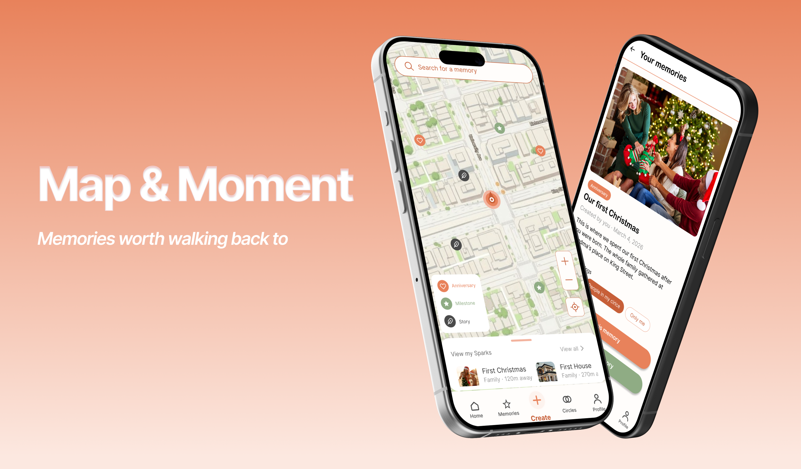
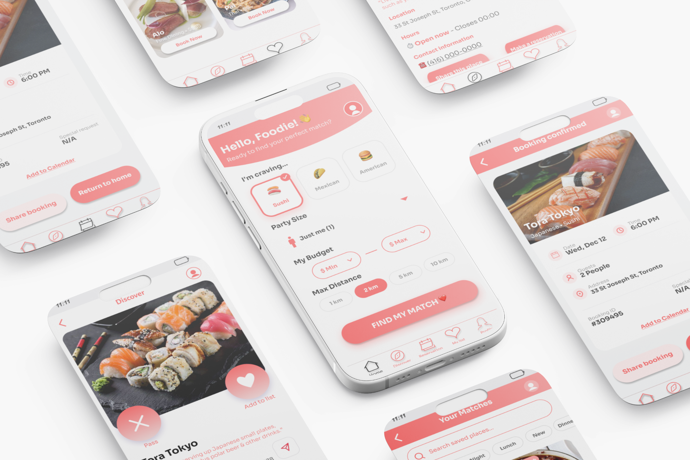
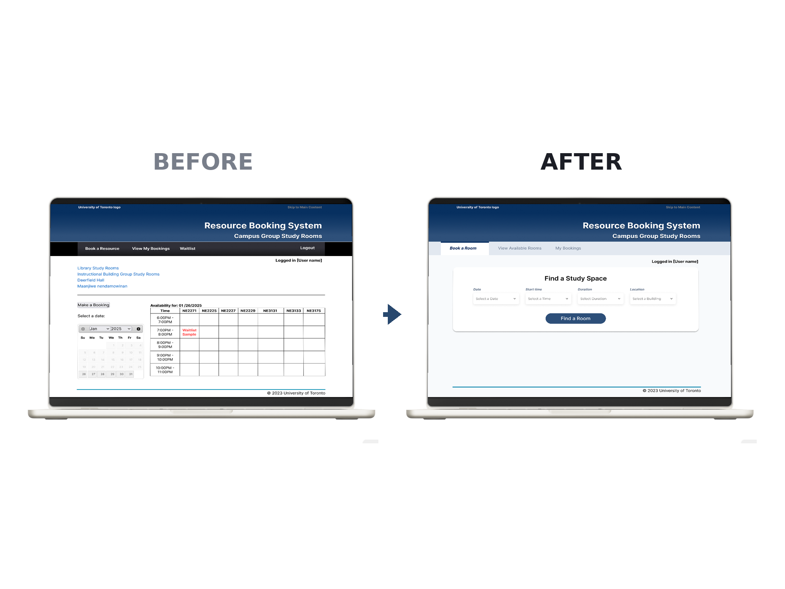
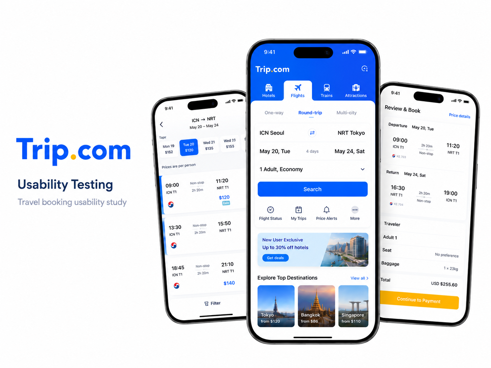
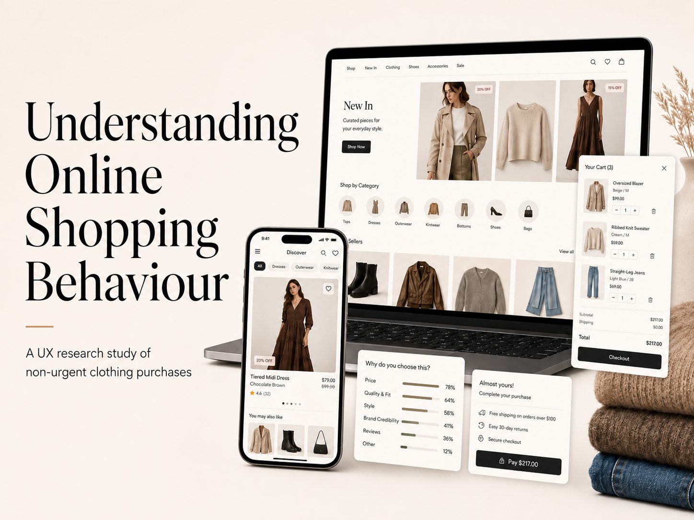
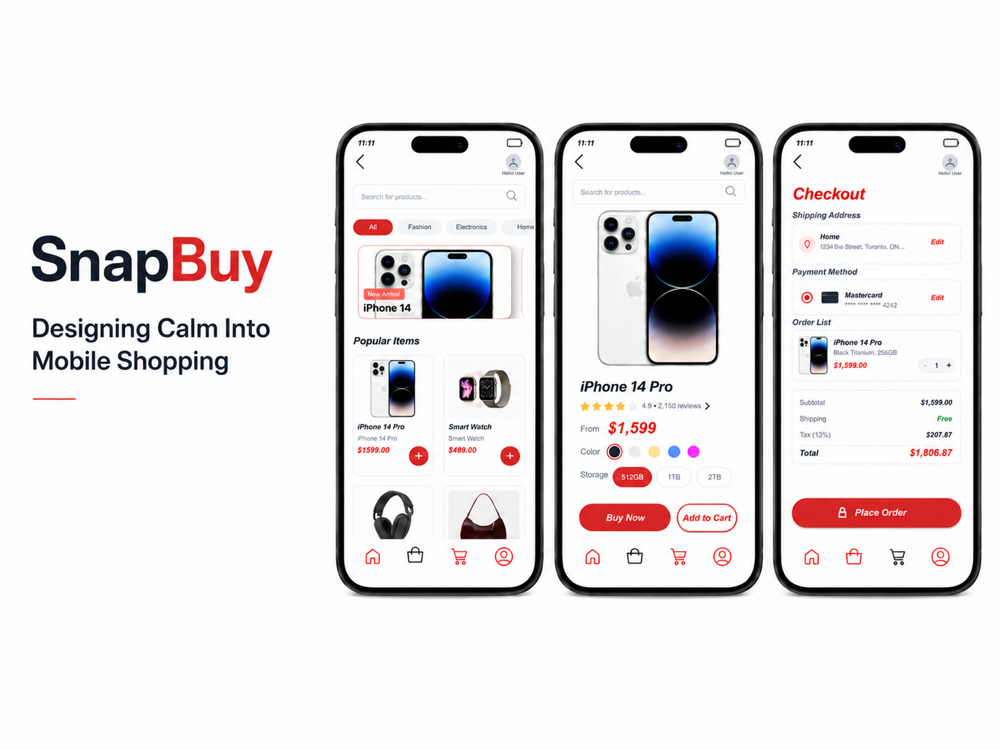

I design products with a builder's & business mind.
A degree in Digital Enterprise Management taught me to think in business goals, not just interfaces. Hand-coding my own projects, including this site, taught me to ship in the browser, not just hand off a mockup. A Master's in User Experience Design now ties both together with research, testing decisions against how people actually behave instead of assumptions.
Where I've applied design, research, and a builder's hands-on instinct.
Deepening research craft, including qualitative interviews, usability testing, and design systems, on top of a Digital Enterprise Management foundation.
Ran mixed-methods research, including surveys and interviews, to evaluate the newly launched Zowie e-sports booking platform, then translated findings into high-fidelity wireframes that lifted product sales by 15%.
See the work →Different strengths for different roles: product thinking, UI craft, research, evaluation, and the systems underneath them. Filter by what you're hiring for.

01A team's mid-fi prototype, taken solo into a high-fidelity redesign anchored by a full design system: tokens, type scale, color aliases, and components.

02A full design-thinking cycle, from 8 interviews and journey maps to usability testing, to fix decision fatigue when choosing where to eat.

03Fixing a real, in-use system: heuristic evaluation and A/B testing with 16 users cut task time by 53.8 seconds.

04A six-participant usability study on Trip.com's cluttered booking flow, moderated solo and coded into a severity-ranked set of findings for the team's final evaluation report.

05Eight semi-structured interviews on why people buy clothes they don't need. I helped design the study, moderated two sessions, and built the shared codebook.

06A solo end-to-end project, from problem framing to UI craft, designing a distraction-free mobile shopping flow.